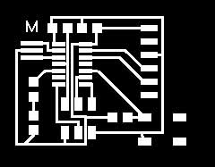
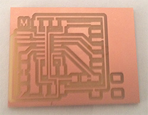
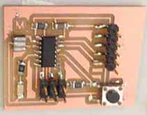

6 - Electronics Design
Intro
The assignment of this week was to modify the Hello Board adding a led and a button.
Modifying the HelloBoard
Even if I'm quite familiar with the basics of electronics I've never designed a pcb. Usually I make my circuits using breadboards (helpful to learn how stuff works) and stripboards. I installed Eagle for Mac but I wasn't able to find a simulator for Eagle neither a Spice version working on mac. I played with 123D Circuits simulator and with Fritzing.
I installed other libraries on Eagle (from here) and I started modifyng the circuit. I started from the scheme, tying to figure out what components are needed. To use the button and the led there is the need to add two resistors to the circuit to prevent the led to burn and the button to cause a short-circuit. As the led, according to it's datasheet, requires 2V and 25 mA to operate I used the Ohm's Law to calculate the correct value of the resistor to apply. The board is powered with 5v so the voltage drop should be 3V. Ohm's Law says thet R=V/I so the value of the resistance is equal to 3/0,025= 120 Ohm however the nearest commercial value is 150 Ohm. For the resistor to be applyed to the button I didn't any calculation but I chose a 10Kohm pull -down resistor to avoid a short circuit when pressing the button. I decided to connect a pull-down resistor so I can read a LOW value when the button is not pressed and an HIGH value when it is pressed.
The fun part was to find enough space to place the components so I had to move the traces around. I used the space underneath the button to let a trace pass without having to add more space. To mill my board I selected only the Top and the Pad layers. I exported the image setting the resolution @600 dpi. With GIMP I created also another file to cut the boundaries of the board. I used the fabmodules to create the gcode files for the Roland. I decided to add an "M" on the board to make it more personal :)
The original board:

The modifyed one:



 Attribution, non-commercial, share alike.
Attribution, non-commercial, share alike.